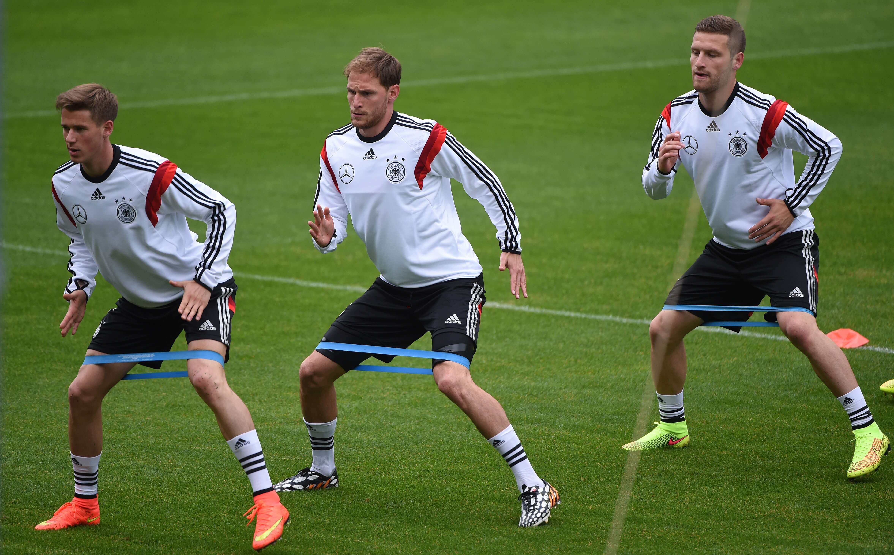
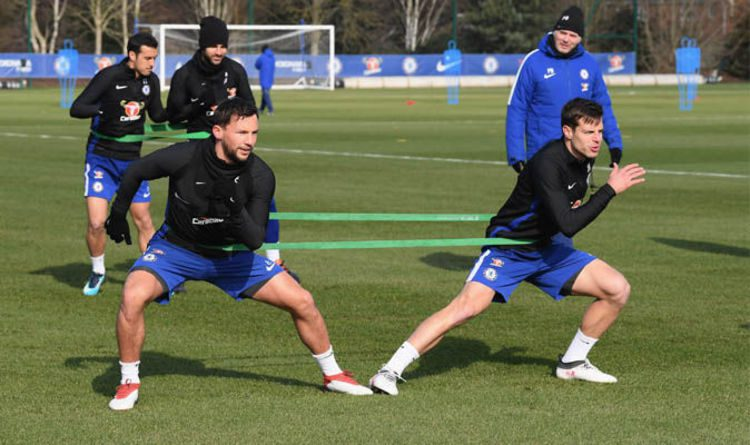
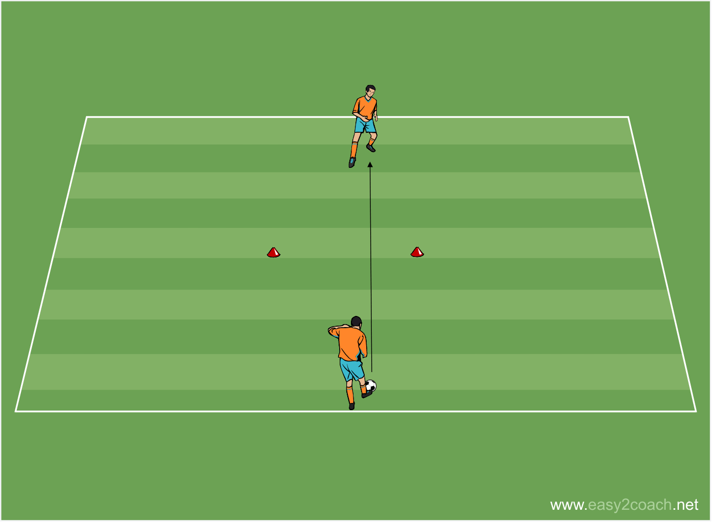
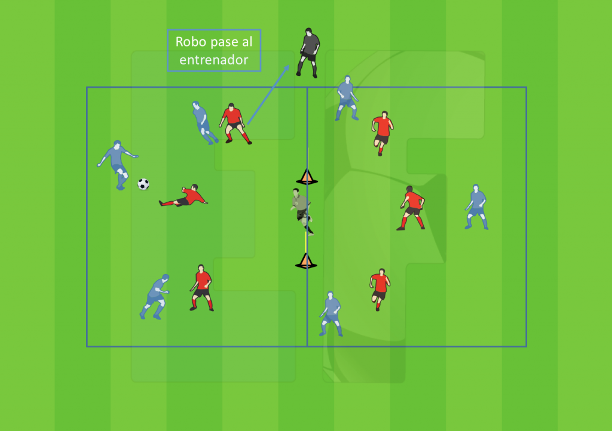

Rutina 1: Desarrollo Técnico Individual (Enfoque: Control, Pase y Conducción)
Objetivo: Mejorar la precisión y fluidez en las habilidades básicas con el balón.
Nivel: Principiante / Intermedio
Duración: 60-75 minutos
Material: Balones, conos, vallas bajas (opcional).

Fase 1: Calentamiento (15 min)
- Movilidad Articular (5 min): Rotaciones de tobillos, rodillas, caderas, tronco, hombros y muñecas.
- Activación Cardiovascular (5 min): Trote suave, skipping, talones al glúteo, desplazamientos laterales.
- Activación con Balón (5 min):
- Conducción suave del balón con la planta del pie, alternando piernas.
- Toques suaves con el interior y exterior del pie, manteniendo el balón cerca.

Fase 2: Técnica de Pase y Recepción (25 min)
- Pases Cortos (10 min):
- Ejercicio: En parejas, separados a 5-8 metros. Realizar pases con el interior del pie, enfocándose en la precisión y el golpeo "limpio". Alternar pierna buena y pierna menos hábil.
- Variante: Añadir un cono entre los jugadores para forzar el pase por un lado.
- Control Orientado (10 min):
- Ejercicio: En parejas o tríos. Un jugador lanza el balón al compañero, quien lo recibe y lo orienta hacia un cono o hacia el espacio libre para el siguiente pase. Trabajar con diferentes alturas y velocidades del balón.
- Variante: Realizar el control orientado y dar 2-3 toques de conducción antes de pasar.
- Pases Largos (5 min):
- Ejercicio: En parejas, separados a 15-20 metros. Practicar pases con el empeine, buscando altura y precisión para que el compañero pueda controlarlo con el muslo o el pecho.

Fase 3: Técnica de Conducción y Regate (20 min)
- Conducción en Slalom (10 min):
- Ejercicio: Colocar 5-7 conos en línea, separados por 1-1.5m. Conducir el balón entre los conos utilizando el interior y exterior del pie. Variar la velocidad y la pierna.
- Variante: Realizar el slalom a máxima velocidad, luego detenerse y realizar un control orientado.
- Conducción y Cambio de Dirección (10 min):
- Ejercicio: Crear un circuito con conos. Conducir el balón, realizar un cambio de dirección brusco (con finta de cuerpo o de pie) y continuar. Trabajar la agilidad y la coordinación.
- Variante: Añadir un "rival" pasivo (un cono más grande o un compañero que solo se mueve en una dirección) para practicar el regate.

Fase 4: Vuelta a la Calma (5 min)
- Trote muy suave.
- Estiramientos estáticos suaves de los principales grupos musculares (cuádriceps, isquiotibiales, gemelos, aductores, glúteos).
Rutina 2: Preparación Física Específica (Enfoque: Velocidad, Agilidad y Potencia)
Objetivo: Mejorar las capacidades físicas clave para el fútbol.
Nivel: Intermedio / Avanzado
Duración: 75-90 minutos
Material: Conos, vallas, balones, escaleras de agilidad, pesas ligeras (opcional).
Fase 1: Calentamiento Dinámico (20 min)
- Movilidad Articular y Activación (10 min): Similar a Rutina 1, pero con mayor intensidad y rango de movimiento.
- Activación Cardiovascular y de Alta Intensidad (10 min):
- Carrera continua con cambios de ritmo.
- Ejercicios de agilidad con escaleras (pasos laterales, frontales, Icky shuffle).
- Saltos cortos y explosivos (saltos a dos pies, saltos a una pierna).
Fase 2: Velocidad y Aceleración (25 min)
- Sprints Cortos (10 min):
- Ejercicio: Sprints de 10-20 metros desde diferentes posiciones (parado, de espaldas, de lado). Enfocarse en la máxima aceleración. Descanso completo entre sprints (1:3 o 1:4 ratio trabajo/descanso).
- Cambios de Dirección (10 min):
- Ejercicio: Circuitos con conos (ej. T-test, L-drill). Correr a máxima velocidad, realizar cambios de dirección bruscos y controlados.
- Velocidad con Balón (5 min):
- Ejercicio: Sprints de 20-30 metros conduciendo el balón a máxima velocidad, con un control orientado al final.

Fase 3: Potencia y Pliometría (25 min)
- Saltos (15 min):
- Ejercicio: Saltos a dos pies sobre vallas bajas (progresar en altura). Saltos verticales con contramovimiento. Saltos laterales. Saltos a una pierna. Enfocarse en la explosividad y el aterrizaje suave.
- Consideración: Realizar con buena técnica y no hasta la fatiga extrema.
- Ejercicios de Fuerza Explosiva (10 min):
- Ejercicio (si hay material): Lanzamiento de balón medicinal (ej. sentadilla con lanzamiento por encima de la cabeza). Zancadas con salto.
- Sin material: Sentadillas con salto, zancadas con salto.
Fase 4: Vuelta a la Calma y Estiramientos (10 min)
- Trote muy suave.
- Estiramientos estáticos profundos, manteniendo cada posición 20-30 segundos. Enfocarse en isquiotibiales, cuádriceps, gemelos, glúteos, aductores, flexores de cadera.

Rutina 3: Entrenamiento Táctico y de Juego (Enfoque: Posesión y Presión)
Objetivo: Mejorar la comprensión del juego, la toma de decisiones y la aplicación de conceptos tácticos.
Nivel: Intermedio / Avanzado
Duración: 75-90 minutos
Material: Balones, conos, petos (para diferenciar equipos).
Fase 1: Calentamiento (15 min)
- Movilidad y Activación (5 min): Trote suave, movilidad articular.
- Juego de Posesión (10 min):
- Ejercicio: Rondo (círculo de jugadores) de 6-8 jugadores con 1-2 porteros en el centro. El objetivo es mantener el balón el mayor tiempo posible, con un toque o dos máximo. Si el portero recupera, se une al círculo y sale otro. Fomenta la visión periférica y el pase rápido.
Fase 2: Trabajo Táctico Específico (30 min)
- Concepto: Presión tras Pérdida (15 min):
- Ejercicio: Juego reducido 4 vs 4 o 5 vs 5 en un campo delimitado con porterías pequeñas. Se juega normal. Al perder el balón, el equipo que lo pierde debe intentar recuperarlo inmediatamente en los primeros 5 segundos (presión tras pérdida). Si no lo recupera, repliega. Si lo recupera, puede atacar.
- Énfasis: Comunicación, coordinación de la presión, decisión de presionar o replegar.
- Concepto: Creación de Espacios y Movilidad (15 min):
- Ejercicio: Juego reducido 6 vs 6 en un campo más grande. Se enfatiza el movimiento sin balón para crear líneas de pase, desmarques de apoyo y de ruptura. Los jugadores deben moverse constantemente para ofrecer opciones de pase y desorganizar la defensa rival.
- Énfasis: Desmarques, apoyos, juego de pared, búsqueda de espacios libres.

- Fase 3: Partido Condicionado (25 min)
- Ejercicio: Partido de entrenamiento 8 vs 8 o 11 vs 11 en campo completo o medio campo.
- Condición 1: El gol solo vale si se inicia tras una jugada de posesión de más de 10 pases consecutivos. (Fomenta la paciencia y la circulación del balón).
- Condición 2: Obligatorio realizar al menos 3 pases consecutivos tras recuperar el balón antes de poder atacar. (Fomenta la transición y la seguridad en la salida).
- Condición 3: Los goles de cabeza valen doble. (Fomenta el juego aéreo y los centros).
- Elegir una o dos condiciones según el objetivo del día.
Fase 4: Vuelta a la Calma (5 min)
- Trote suave.
- Estiramientos estáticos suaves.
- Breve charla de análisis del entrenamiento.
Consideraciones Adicionales:
- Progresión: Estas rutinas pueden ser adaptadas. Para principiantes, reducir la intensidad, el volumen y la complejidad de los ejercicios. Para avanzados, aumentar la carga, la velocidad y la exigencia táctica.
- Individualización: Siempre que sea posible, adaptar ejercicios para trabajar las necesidades específicas de cada jugador (ej. un jugador con problemas de control, uno que necesita mejorar su pierna no hábil).
- Calentamiento y Vuelta a la Calma: Son fases cruciales para prevenir lesiones y optimizar la recuperación. No deben ser omitidas.
- Variedad: Es importante variar los ejercicios y las rutinas a lo largo de la temporada para evitar la monotonía y seguir estimulando al jugador.
- Nutrición e Hidratación: Recordar a los jugadores la importancia de una buena alimentación e hidratación antes, durante y después de cada sesión.
Estas rutinas son un punto de partida. Un entrenador cualificado sabrá adaptarlas y crear sesiones aún más específicas según las necesidades del equipo y los jugadores.
|